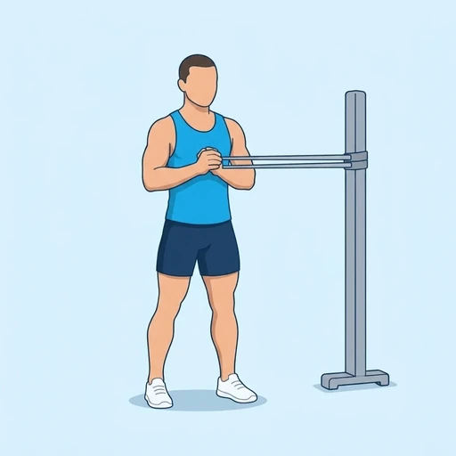
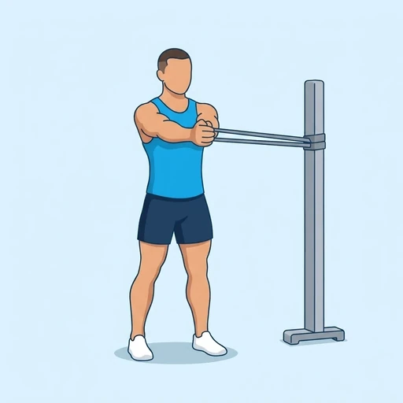

Banded Pallof Press
An anti-rotation core exercise with a resistance band anchored beside you at chest height. You hold the band at your chest, press your hands straight out in front of you and resist the pull of the band that tries to turn your trunk, then bring your hands back. The abdominal muscles and obliques work to keep your body still.
Core · Resistance Band · Intermediate


Muscles worked by the Banded Pallof Press
Primary
Secondary
Also called: oblique, obliques, side abs, external oblique, internal oblique, transverse abdominis.
Equipment
Also called: power band, pull-up band, assistance band, tube band, tubing band, long resistance band.
How to do the Banded Pallof Press
- Anchor a resistance band at chest height and stand sideways to it with your feet shoulder-width apart, holding the band with both hands at the centre of your chest.
- Step away from the anchor until the band is under tension, with your knees slightly bent and your hips and shoulders facing forward.
- Press your hands straight out in front of your chest until your arms are fully extended, without letting your trunk turn toward the anchor.
- Hold for a moment with your body completely still.
- Bring your hands back to your chest under control.
- Complete the planned repetitions, then turn around and repeat on the other side.
Form tips
- The work is in keeping your torso still, not in the press itself; use a lighter band if your hips or shoulders twist.
- Stand tall with your ribs down and your glutes lightly squeezed.
- Step further from the anchor or use a thicker band to make it harder.
At a glance
| Body part | Core |
|---|---|
| Category | Strength |
| Force type | Push |
| Mechanic | Compound |
| Difficulty | Intermediate |
| Equipment | Resistance Band |
| Goals | Core, Strength |
| Tags | Core, Core focus, Lower back safe, Knee safe, No axial load, Shoulder safe |
| MET | 6.0 (metabolic equivalent, for calorie estimates) |
| Unilateral | No |
| Bodyweight | No |
| Dataset id | banded-pallof-press |
Banded Pallof Press in German & Spanish
| German | Pallof Press mit Band |
|---|---|
| Spanish | Press Pallof con Banda |
Descriptions, instructions and tips ship in all three languages in the JSON.
Related exercises
Exercise data (JSON)
The record below is exactly what exercises.json ships for this exercise — names, descriptions, instructions and tips in English, German and Spanish.
{
"id": "banded-pallof-press",
"name_en": "Banded Pallof Press",
"name_de": "Pallof Press mit Band",
"name_es": "Press Pallof con Banda",
"description_en": "An anti-rotation core exercise with a resistance band anchored beside you at chest height. You hold the band at your chest, press your hands straight out in front of you and resist the pull of the band that tries to turn your trunk, then bring your hands back. The abdominal muscles and obliques work to keep your body still.",
"description_de": "Eine Anti-Rotations-Übung für den Rumpf mit einem Widerstandsband, das seitlich neben dir auf Brusthöhe befestigt ist. Du hältst das Band an der Brust, drückst die Hände gerade nach vorn und widerstehst dem Zug des Bandes, der deinen Rumpf drehen will, und führst die Hände dann zurück. Die Bauchmuskeln und die schrägen Bauchmuskeln arbeiten, um deinen Körper ruhig zu halten.",
"description_es": "Un ejercicio anti-rotación para el core con una banda elástica anclada a tu lado a la altura del pecho. Sujetas la banda en el pecho, empujas las manos en línea recta hacia adelante y resistes la tensión de la banda que intenta girarte el tronco, y luego vuelves con las manos al pecho. Los abdominales y los oblicuos trabajan para mantener el cuerpo quieto.",
"category": "strength",
"force_type": "push",
"mechanic": "compound",
"difficulty": "intermediate",
"equipment": "resistance_band",
"body_part": "core",
"primary_muscles": [
"obliques",
"transverse_abdominis"
],
"secondary_muscles": [
"anterior_deltoid",
"erector_spinae",
"gluteus_medius",
"rectus_abdominis"
],
"goals": [
"core",
"strength"
],
"tags": [
"core",
"core_focus",
"lower_back_safe",
"knee_safe",
"no_axial_load",
"shoulder_safe"
],
"is_unilateral": false,
"is_bodyweight": false,
"instructions_en": [
"Anchor a resistance band at chest height and stand sideways to it with your feet shoulder-width apart, holding the band with both hands at the centre of your chest.",
"Step away from the anchor until the band is under tension, with your knees slightly bent and your hips and shoulders facing forward.",
"Press your hands straight out in front of your chest until your arms are fully extended, without letting your trunk turn toward the anchor.",
"Hold for a moment with your body completely still.",
"Bring your hands back to your chest under control.",
"Complete the planned repetitions, then turn around and repeat on the other side."
],
"instructions_de": [
"Befestige ein Widerstandsband auf Brusthöhe und stell dich seitlich dazu, die Füße schulterbreit, und halte das Band mit beiden Händen in der Mitte deiner Brust.",
"Geh vom Befestigungspunkt weg, bis das Band unter Spannung steht, die Knie leicht gebeugt, und Hüfte und Schultern zeigen nach vorn.",
"Drücke die Hände gerade nach vorn von der Brust weg, bis die Arme vollständig gestreckt sind, ohne den Rumpf zum Befestigungspunkt drehen zu lassen.",
"Halte einen Moment inne, mit dem Körper völlig ruhig.",
"Führe die Hände kontrolliert zurück zur Brust.",
"Absolviere die geplante Anzahl an Wiederholungen, dreh dich dann um und wiederhole auf der anderen Seite."
],
"instructions_es": [
"Ancla una banda elástica a la altura del pecho y colócate de lado a ella con los pies separados al ancho de los hombros, sujetando la banda con ambas manos en el centro del pecho.",
"Aléjate del anclaje hasta que la banda quede en tensión, con las rodillas ligeramente flexionadas y las caderas y los hombros mirando al frente.",
"Empuja las manos en línea recta hacia adelante desde el pecho hasta que los brazos queden completamente extendidos, sin dejar que el tronco gire hacia el anclaje.",
"Mantén la posición un momento con el cuerpo completamente quieto.",
"Vuelve con las manos al pecho con control.",
"Completa el número de repeticiones previsto y luego date la vuelta y repite del otro lado."
],
"tips_en": [
"The work is in keeping your torso still, not in the press itself; use a lighter band if your hips or shoulders twist.",
"Stand tall with your ribs down and your glutes lightly squeezed.",
"Step further from the anchor or use a thicker band to make it harder."
],
"tips_de": [
"Die Arbeit liegt darin, den Oberkörper ruhig zu halten, nicht im Drücken selbst; nimm ein leichteres Band, wenn sich Hüfte oder Schultern verdrehen.",
"Steh aufrecht, die Rippen unten und das Gesäß leicht angespannt.",
"Geh weiter vom Befestigungspunkt weg oder nimm ein dickeres Band, um es schwerer zu machen."
],
"tips_es": [
"El trabajo está en mantener el torso quieto, no en el empuje en sí; usa una banda más ligera si las caderas o los hombros giran.",
"Ponte erguido con las costillas bajas y los glúteos ligeramente apretados.",
"Aléjate más del anclaje o usa una banda más gruesa para hacerlo más difícil."
],
"met": 6.0,
"images": {
"flat": {
"start": "images/flat/banded-pallof-press-start.webp",
"peak": "images/flat/banded-pallof-press-peak.webp"
}
}
}Fetch just this exercise
const { exercises } = await fetch(
"https://exercise-dataset.com/exercises.json"
).then(r => r.json());
const ex = exercises.find(e => e.id === "banded-pallof-press");Free for personal and commercial in-app use with attribution (“Exercise data by RepDB”) — see the license and ready-made attribution snippets. Redistributing the data as a dataset or API is not permitted.